Réservation
Votre prochaine prise commence ici
Contactez-nous pour organiser votre sortie journée ou votre expédition de plusieurs jours au Cap Masoala.
Sorties journée et séjours multi-jours en bateau, conçus pour les pêcheurs passionnés qui recherchent des spots sauvages, de vraies sensations et des prises mémorables.
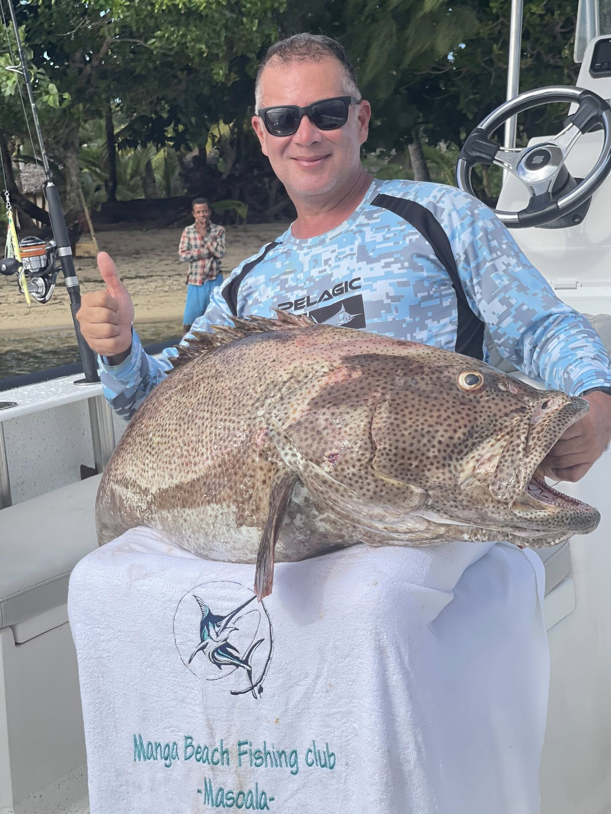
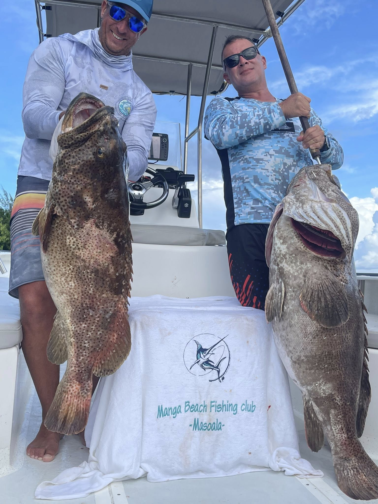
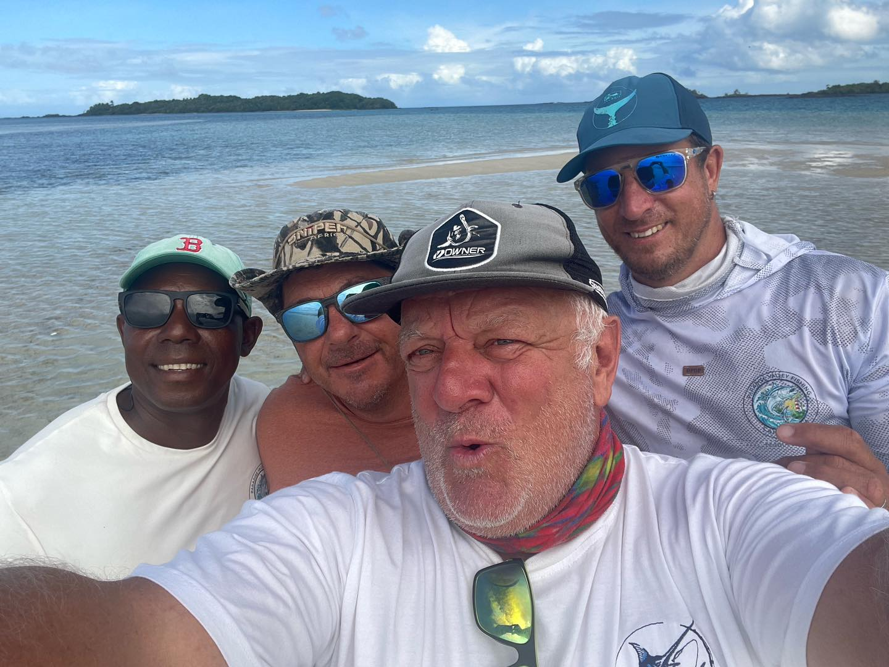
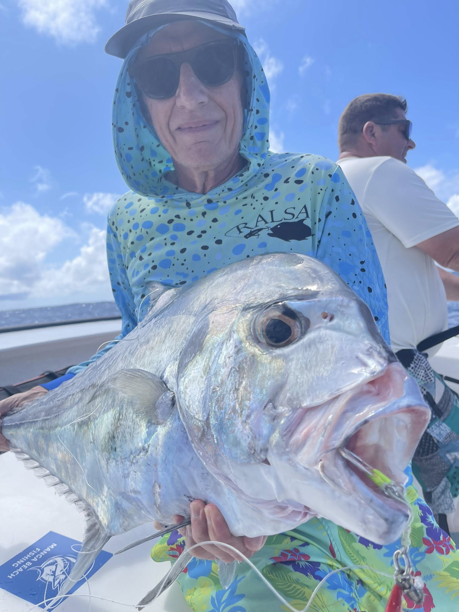
Pêche Sportive Masoala propose une expérience réaliste, intense et authentique : départ en bateau, recherche des zones actives, navigation dans des eaux préservées et accompagnement local.
Le site est orienté pêche sérieuse : sorties à la journée pour une première session, ou expéditions de plusieurs jours pour aller plus loin et maximiser les opportunités.
Les images réelles renforcent la crédibilité : gros mérous, poissons tropicaux puissants, carangues et prises de récif. Cette section doit devenir l’un des points forts du site.
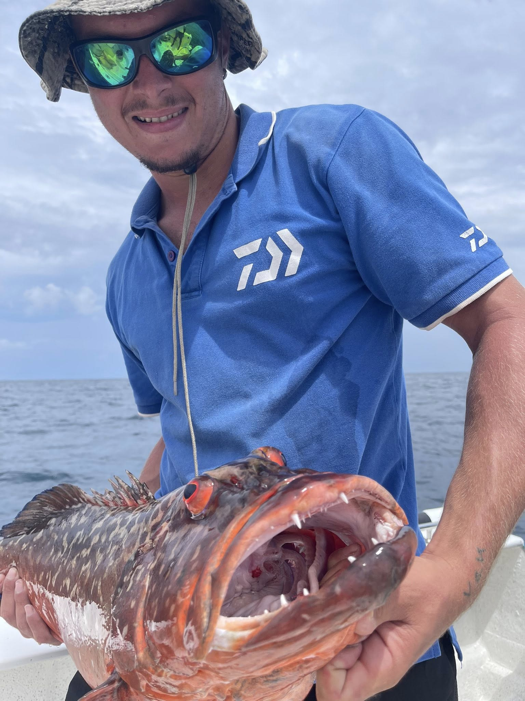
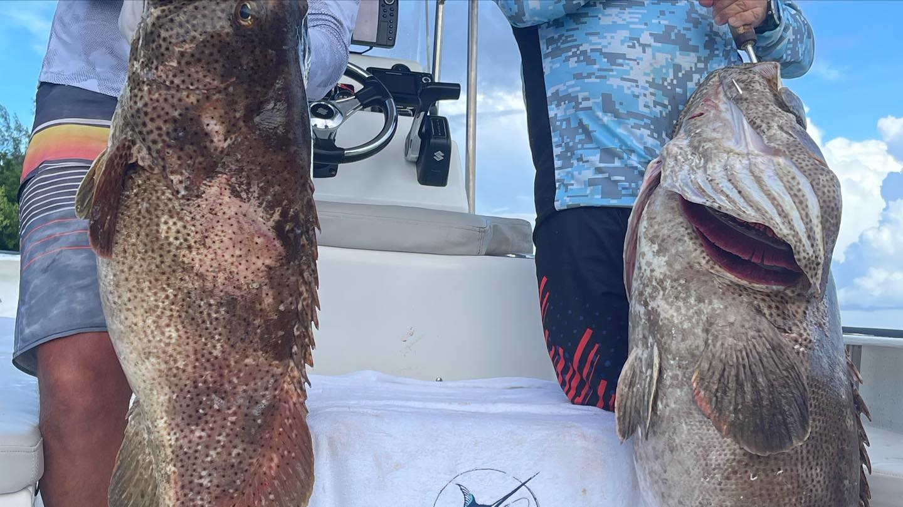
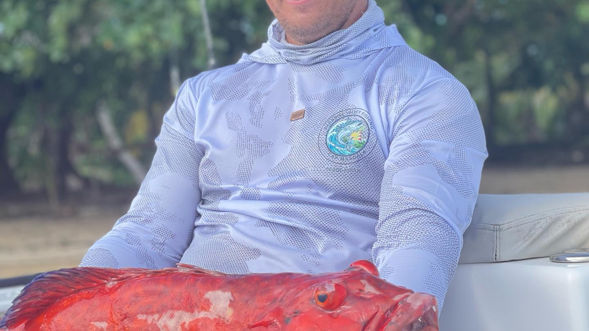
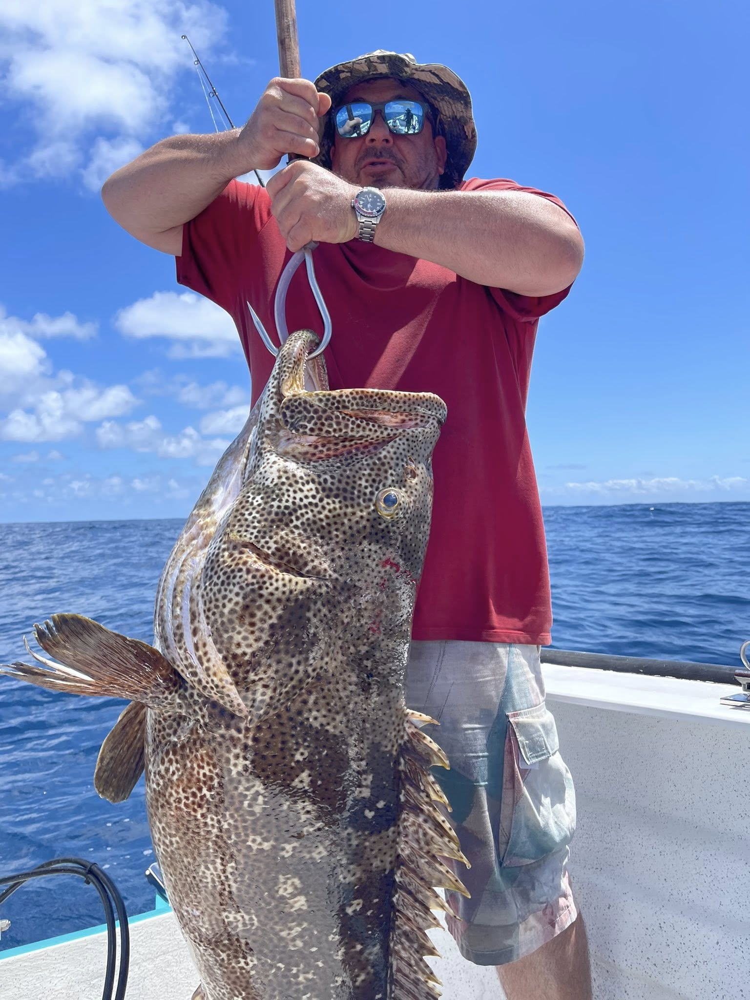
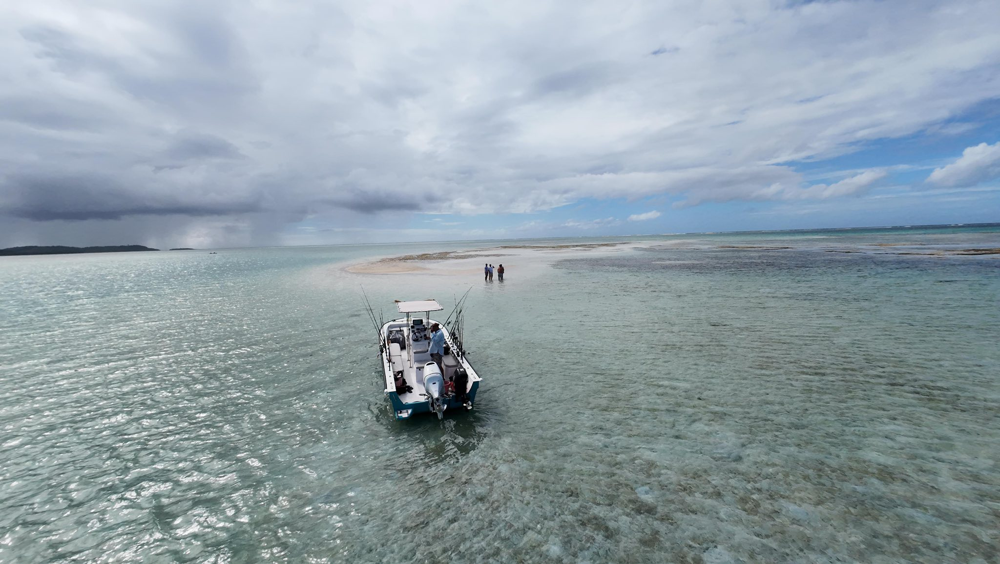
Les techniques exactes peuvent être ajustées selon la météo, le niveau des pêcheurs et les zones visées.
Pour rechercher de gros poissons et vivre des combats intenses en mer.
Pêche sportiveTraîne en navigation pour explorer efficacement les zones actives.
ProspectionTechnique dynamique pour cibler des poissons puissants en profondeur.
ActionSessions autour des zones côtières, récifs et tombants selon les conditions.
VariétéLe bateau permet d’accéder aux zones du Cap Masoala, aux eaux claires, aux récifs, aux bancs de sable et aux secteurs moins exploités.
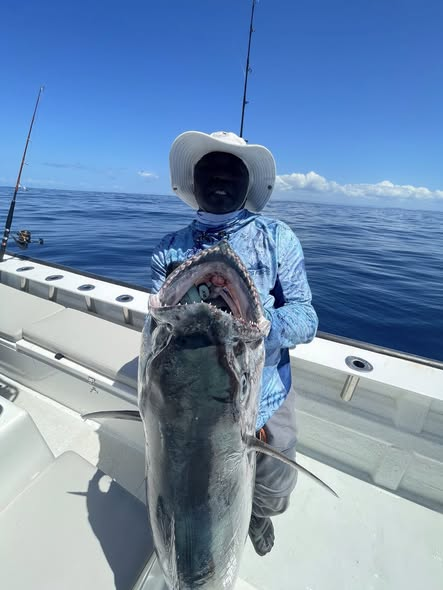
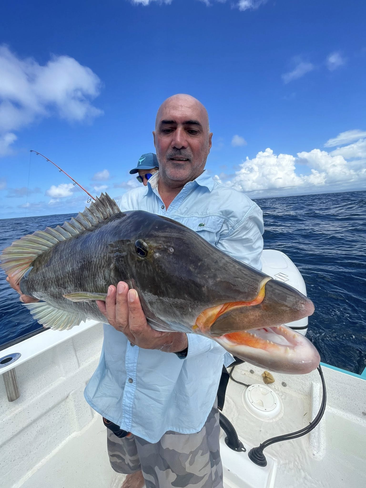
Journée complète ou programme multi-jours, selon votre niveau, votre objectif et les conditions de mer.
Les tarifs et détails exacts peuvent être ajoutés plus tard. Pour l’instant, ces cartes structurent clairement l’offre.
Une journée complète pour découvrir les zones accessibles et vivre une vraie session de pêche sportive.
Pour les pêcheurs passionnés qui veulent optimiser leurs chances et explorer des zones plus éloignées.
Idéal pour amis pêcheurs, petit groupe ou client souhaitant une expérience plus exclusive.
Une galerie visuelle forte pour convaincre rapidement les visiteurs.
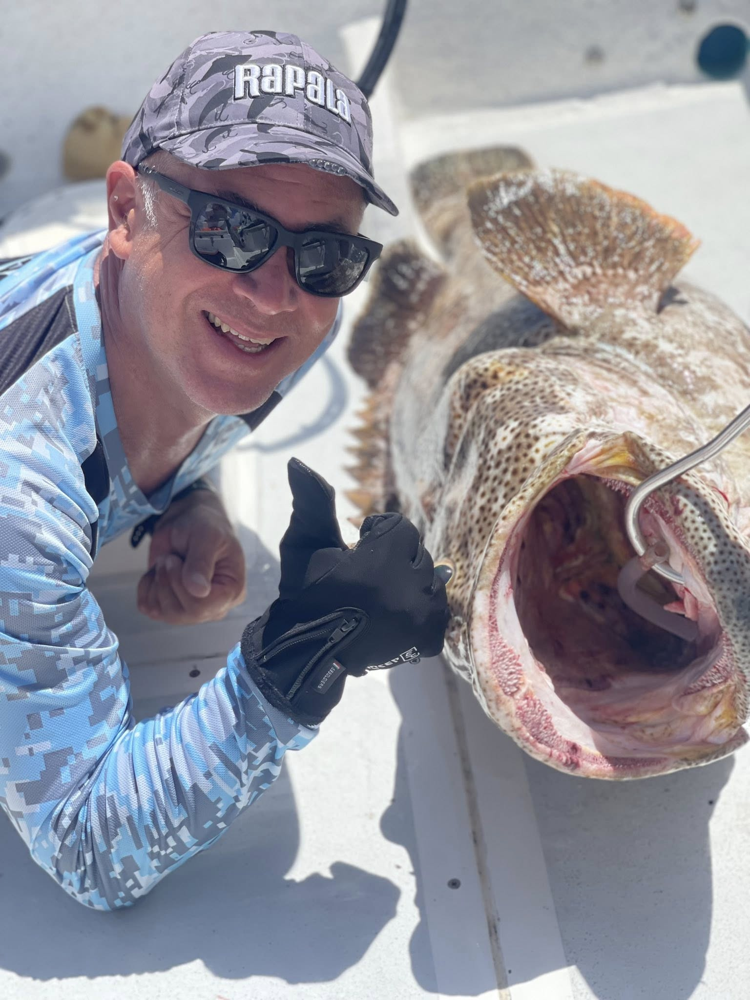
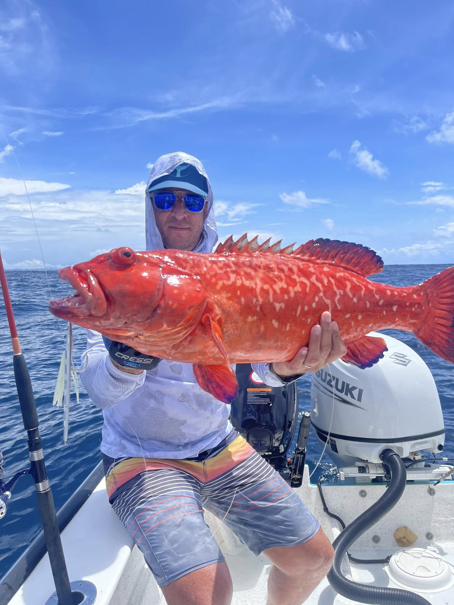
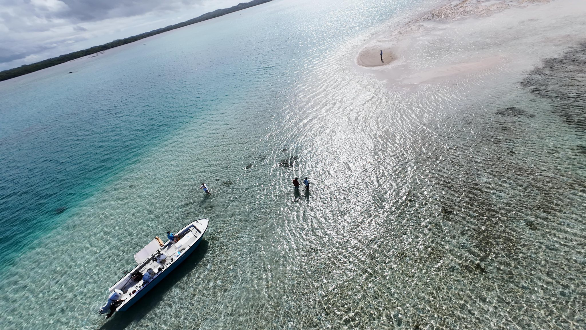
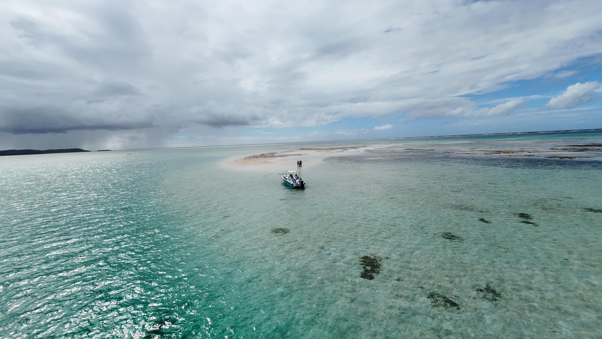
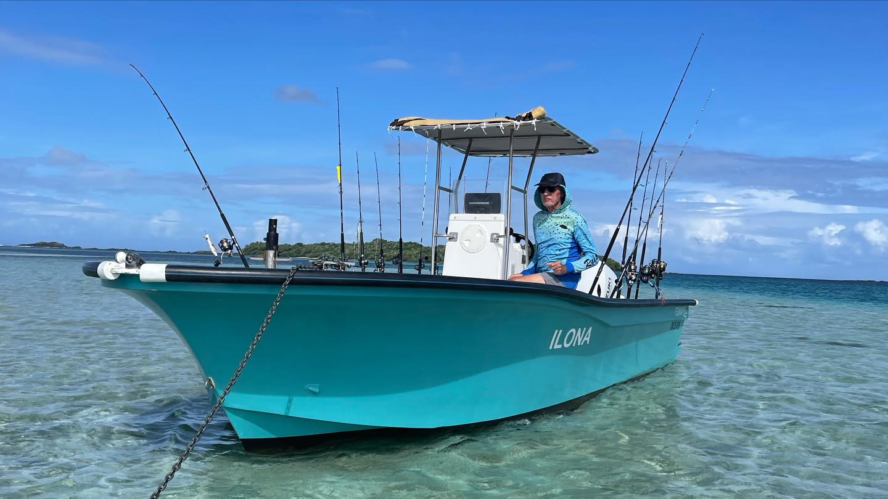
Pêche Sportive Masoala reste indépendante, mais connectée aux autres sites pour créer un parcours touristique complet.
Le site vise surtout les pêcheurs passionnés, mais une sortie peut être adaptée selon le niveau du groupe.
Oui, l’expérience est organisée autour de sorties en bateau vers les zones de pêche.
Oui, des expéditions multi-jours peuvent être organisées selon disponibilité, météo et objectif.
Le plus simple est de passer par WhatsApp pour vérifier les dates, la météo, le nombre de pêcheurs et le programme.
Contactez-nous pour organiser votre sortie journée ou votre expédition de plusieurs jours au Cap Masoala.